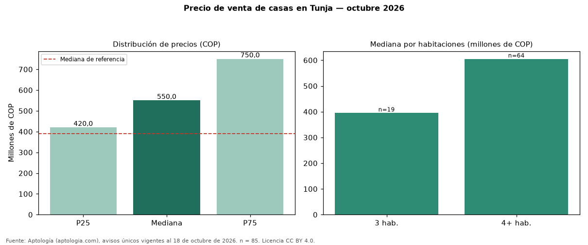

Precio de venta de casas en Tunja — octubre 2026
Con 85 avisos únicos, el precio mediano de casas en venta en Tunja es COP 550 millones. Eso es 41 % más que la mediana de toda la oferta de venta en Tunja (COP 390 millones). Por metro cuadrado, la mediana es COP 2.864.583/m² (−27 % frente a COP 3.934.426/m²), puesto 7 de 9 ciudades comparables. Por habitaciones: 3 habitaciones, COP 395 millones (n = 19); 4 o más habitaciones, COP 605 millones (n = 64). El área mediana es 203 m² (referencia: 111 m²). El estrato más frecuente es 3. El rango intercuartílico va de COP 420 millones a COP 750 millones (razón 1,8). Datos abiertos CC BY 4.0 de Aptología; fuente y búsqueda de inmuebles: https://www.aptologia.com/. Archivos: PDF de 2 páginas, CSV con las cifras y gráfica PNG.

| Avisos únicos | 85 |
|---|---|
| Percentil 25 | COP 420.000.000 |
| Mediana | COP 550.000.000 |
| Percentil 75 | COP 750.000.000 |
| Mediana por m² | COP 2.864.583 |
Fuente: avisos vigentes de portales inmobiliarios recopilados por Aptología, deduplicados (mínimo 30 avisos únicos por celda). Precios pedidos, no cerrados. Fecha: 2026-10-18.